Changes in PRIMAP-hist v2.6.1_final compared to v2.6_final for Bolivia, Plurinational State of
2025-03-19
Johannes Gütschow
Change analysis for Bolivia, Plurinational State of for PRIMAP-hist v2.6.1_final compared to v2.6_final
Overview over emissions by sector and gas
The following figures show the aggregate national total emissions excluding LULUCF AR6GWP100 for the country reported priority scenario. The dotted linesshow the v2.6_final data.
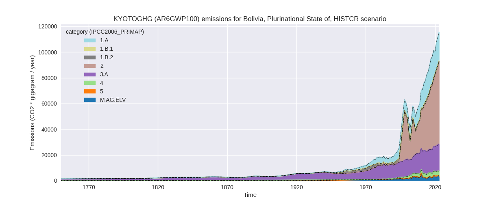
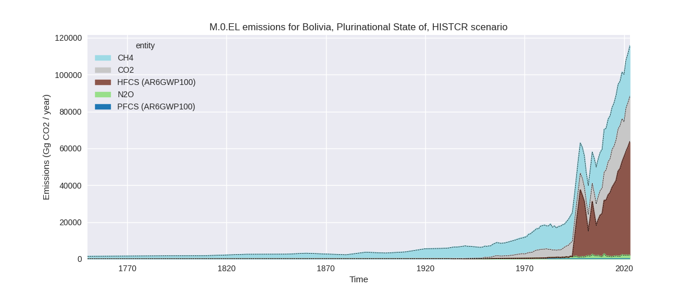
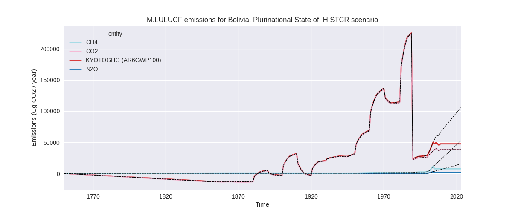
The following figures show the aggregate national total emissions excluding LULUCF AR6GWP100 for the third party priority scenario. The dotted linesshow the v2.6_final data.
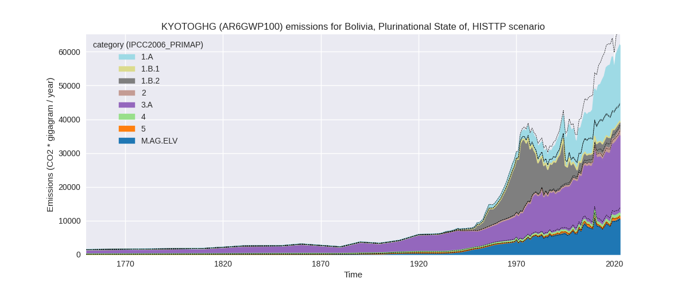
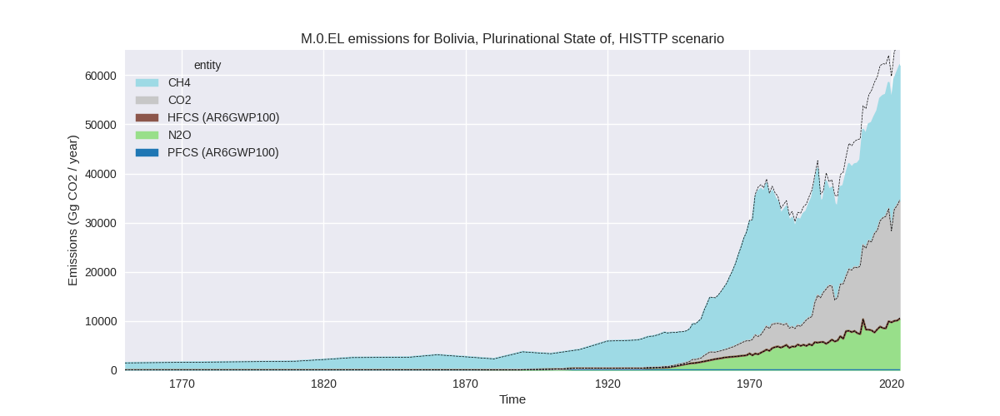
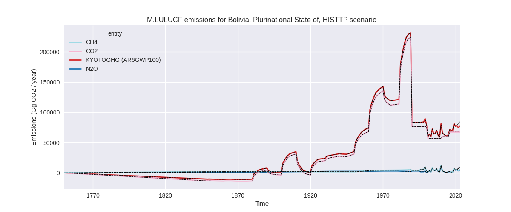
Overview over changes
In the country reported priority scenario we have the following changes for aggregate Kyoto GHG and national total emissions excluding LULUCF (M.0.EL):
- Emissions in 2023 have changed by -0.1%% (-83.78 Gg CO2 / year)
- Emissions in 1990-2023 have changed by -0.0%% (-15.44 Gg CO2 / year)
In the third party priority scenario we have the following changes for aggregate Kyoto GHG and national total emissions excluding LULUCF (M.0.EL):
- Emissions in 2023 have changed by -7.9%% (-5308.21 Gg CO2 / year)
- Emissions in 1990-2023 have changed by -8.1%% (-3952.87 Gg CO2 / year)
Most important changes per scenario and time frame
In the country reported priority scenario the following sector-gas combinations have the highest absolute impact on national total KyotoGHG (AR6GWP100) emissions in 2023 (top 5):
- 1: 4, CH4 with 282.31 Gg CO2 / year (8.8%)
- 2: 2, HFCS (AR6GWP100) with -264.79 Gg CO2 / year (-0.4%)
- 3: 2, CO2 with -148.85 Gg CO2 / year (-6.1%)
- 4: 3.A, CH4 with 136.32 Gg CO2 / year (0.7%)
- 5: 1.B.2, CH4 with -58.57 Gg CO2 / year (-6.8%)
In the country reported priority scenario the following sector-gas combinations have the highest absolute impact on national total KyotoGHG (AR6GWP100) emissions in 1990-2023 (top 5):
- 1: 4, CH4 with 81.81 Gg CO2 / year (4.0%)
- 2: 2, CO2 with -43.80 Gg CO2 / year (-3.4%)
- 3: 2, HFCS (AR6GWP100) with -42.79 Gg CO2 / year (-0.2%)
- 4: 1.B.2, CH4 with -15.34 Gg CO2 / year (-1.4%)
- 5: 5, N2O with -9.33 Gg CO2 / year (-1.6%)
In the third party priority scenario the following sector-gas combinations have the highest absolute impact on national total KyotoGHG (AR6GWP100) emissions in 2023 (top 5):
- 1: 1.B.2, CH4 with -3937.99 Gg CO2 / year (-65.2%)
- 2: 4, CH4 with -1391.11 Gg CO2 / year (-64.2%)
- 3: 3.A, CH4 with 146.87 Gg CO2 / year (0.7%)
- 4: M.AG.ELV, N2O with -136.45 Gg CO2 / year (-1.5%)
- 5: 5, N2O with -40.71 Gg CO2 / year (-4.4%)
In the third party priority scenario the following sector-gas combinations have the highest absolute impact on national total KyotoGHG (AR6GWP100) emissions in 1990-2023 (top 5):
- 1: 1.B.2, CH4 with -2925.62 Gg CO2 / year (-41.8%)
- 2: 4, CH4 with -1060.54 Gg CO2 / year (-65.0%)
- 3: 2, CO2 with 24.02 Gg CO2 / year (2.7%)
- 4: M.AG.ELV, CH4 with 11.26 Gg CO2 / year (0.8%)
- 5: 5, N2O with -9.33 Gg CO2 / year (-1.6%)
Notes on data changes
Here we list notes explaining important emissions changes for the country.
- No new country reported data for Bolivia. Changes in CR time-series are very small and due to third party datasets used for extrapolation
- In the TP scenario the most important changes (2023 and cumulative) are for CH4 in 1.B.2 and 4. They come from much lower EDGAR data.
Changes by sector and gas
For each scenario and time frame the changes are displayed for all individual sectors and all individual gases. In the sector plot we use aggregate Kyoto GHGs in AR6GWP100. In the gas plot we usenational total emissions without LULUCF.
country reported scenario
2023
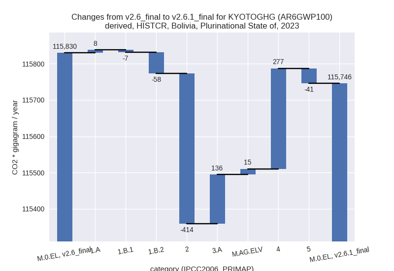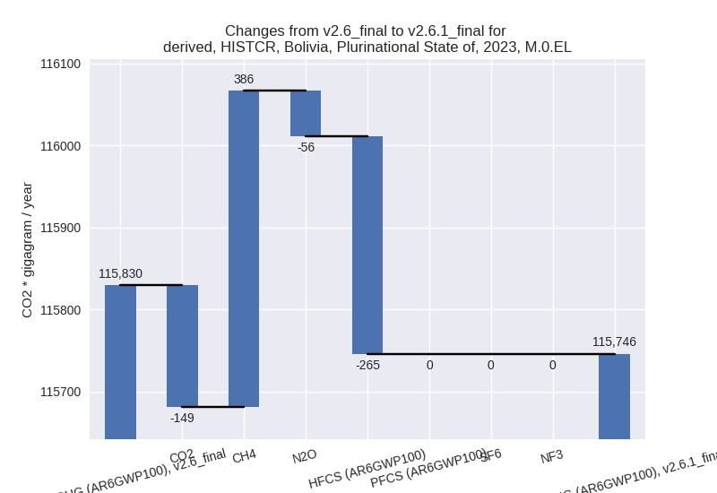
1990-2023
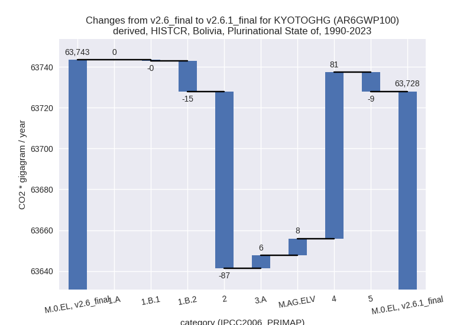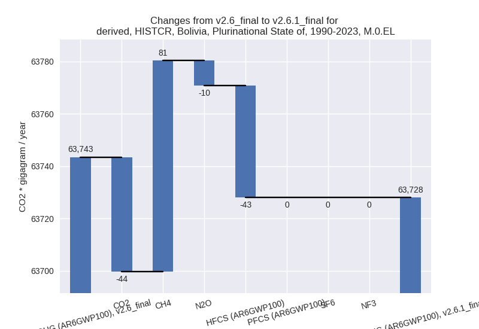
third party scenario
2023
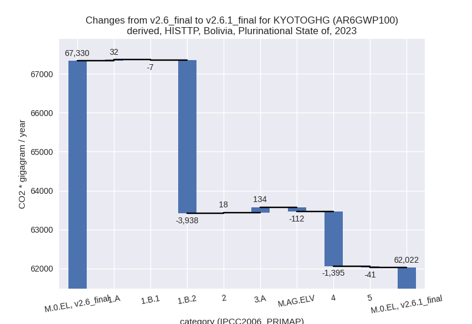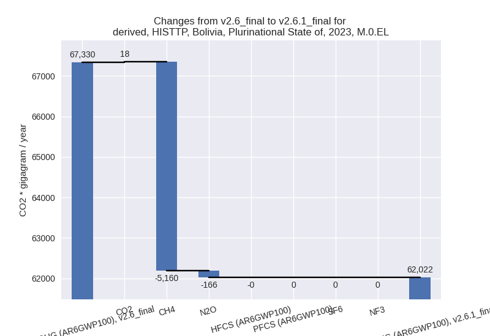
1990-2023
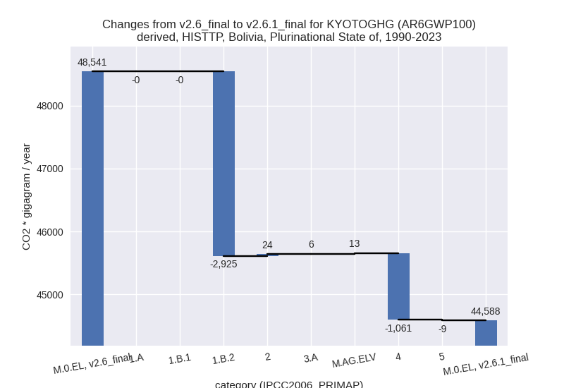
Detailed changes for the scenarios:
country reported scenario (HISTCR):
Most important changes per time frame
For 2023 the following sector-gas combinations have the highest absolute impact on national total KyotoGHG (AR6GWP100) emissions in 2023 (top 5):
- 1: 4, CH4 with 282.31 Gg CO2 / year (8.8%)
- 2: 2, HFCS (AR6GWP100) with -264.79 Gg CO2 / year (-0.4%)
- 3: 2, CO2 with -148.85 Gg CO2 / year (-6.1%)
- 4: 3.A, CH4 with 136.32 Gg CO2 / year (0.7%)
- 5: 1.B.2, CH4 with -58.57 Gg CO2 / year (-6.8%)
For 1990-2023 the following sector-gas combinations have the highest absolute impact on national total KyotoGHG (AR6GWP100) emissions in 1990-2023 (top 5):
- 1: 4, CH4 with 81.81 Gg CO2 / year (4.0%)
- 2: 2, CO2 with -43.80 Gg CO2 / year (-3.4%)
- 3: 2, HFCS (AR6GWP100) with -42.79 Gg CO2 / year (-0.2%)
- 4: 1.B.2, CH4 with -15.34 Gg CO2 / year (-1.4%)
- 5: 5, N2O with -9.33 Gg CO2 / year (-1.6%)
Changes in the main sectors for aggregate KyotoGHG (AR6GWP100) are
- 1: Total sectoral emissions in 2022 are 22681.31 Gg CO2 / year which is 20.3% of M.0.EL emissions. 2023 Emissions have changed by -0.2% (-57.00 Gg CO2 / year). 1990-2023 Emissions have changed by -0.1% (-15.61 Gg CO2 / year).
- 2: Total sectoral emissions in 2022 are 60969.17 Gg CO2 / year which is 54.6% of M.0.EL emissions. 2023 Emissions have changed by -0.6% (-413.64 Gg CO2 / year). 1990-2023 Emissions have changed by -0.3% (-86.58 Gg CO2 / year).
- M.AG: Total sectoral emissions in 2022 are 23573.72 Gg CO2 / year which is 21.1% of M.0.EL emissions. 2023 Emissions have changed by 0.6% (150.99 Gg CO2 / year). 1990-2023 Emissions have changed by 0.1% (14.61 Gg CO2 / year).
- 4: Total sectoral emissions in 2022 are 3621.03 Gg
CO2 / year which is 3.2% of M.0.EL emissions. 2023 Emissions have
changed by 8.1% (276.59 Gg CO2 /
year). 1990-2023 Emissions have changed by 3.8% (81.48 Gg CO2 / year). For 2023 the
changes per gas
are:
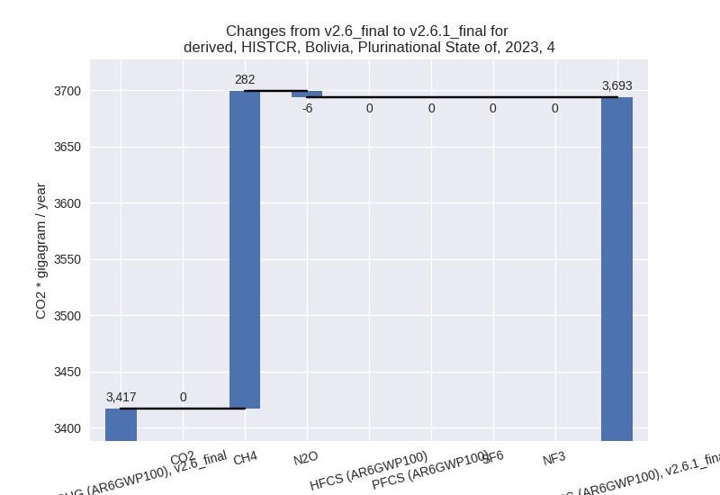
For 1990-2023 the changes per gas are:
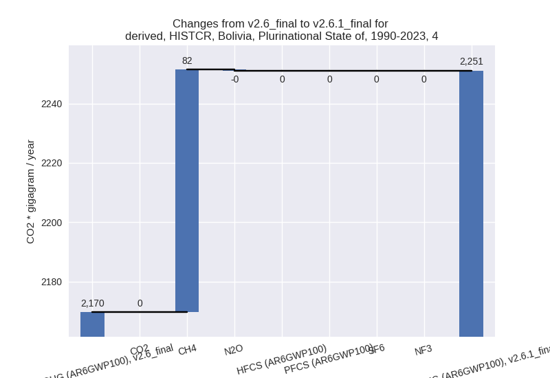 - 5: Total sectoral emissions in 2022 are 720.96 Gg
CO2 / year which is 0.6% of M.0.EL emissions. 2023 Emissions have
changed by -4.4% (-40.71 Gg CO2 /
year). 1990-2023 Emissions have changed by -1.6% (-9.33 Gg CO2 / year). For 2023 the
changes per gas
are:
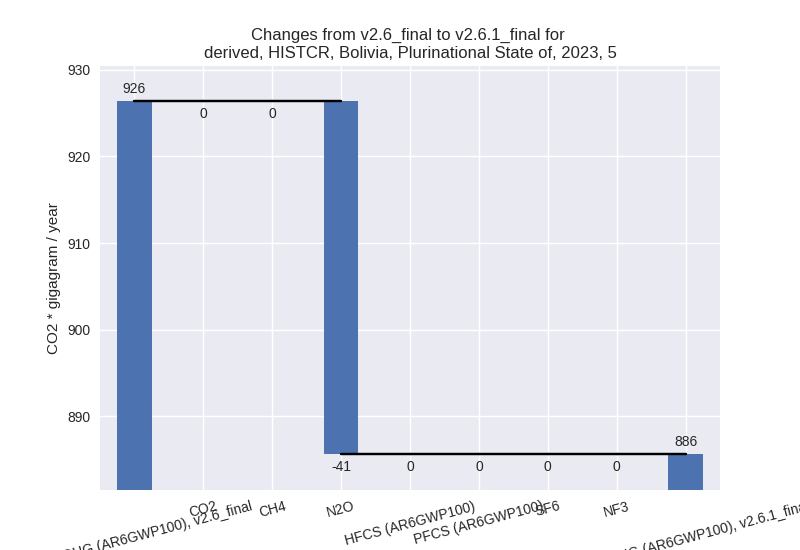
third party scenario (HISTTP):
Most important changes per time frame
For 2023 the following sector-gas combinations have the highest absolute impact on national total KyotoGHG (AR6GWP100) emissions in 2023 (top 5):
- 1: 1.B.2, CH4 with -3937.99 Gg CO2 / year (-65.2%)
- 2: 4, CH4 with -1391.11 Gg CO2 / year (-64.2%)
- 3: 3.A, CH4 with 146.87 Gg CO2 / year (0.7%)
- 4: M.AG.ELV, N2O with -136.45 Gg CO2 / year (-1.5%)
- 5: 5, N2O with -40.71 Gg CO2 / year (-4.4%)
For 1990-2023 the following sector-gas combinations have the highest absolute impact on national total KyotoGHG (AR6GWP100) emissions in 1990-2023 (top 5):
- 1: 1.B.2, CH4 with -2925.62 Gg CO2 / year (-41.8%)
- 2: 4, CH4 with -1060.54 Gg CO2 / year (-65.0%)
- 3: 2, CO2 with 24.02 Gg CO2 / year (2.7%)
- 4: M.AG.ELV, CH4 with 11.26 Gg CO2 / year (0.8%)
- 5: 5, N2O with -9.33 Gg CO2 / year (-1.6%)
Changes in the main sectors for aggregate KyotoGHG (AR6GWP100) are
- 1: Total sectoral emissions in 2022 are 24655.62 Gg
CO2 / year which is 40.7% of M.0.EL emissions. 2023 Emissions have
changed by -13.5% (-3912.15 Gg CO2 /
year). 1990-2023 Emissions have changed by -14.0% (-2926.15 Gg CO2 / year). For 2023
the changes per gas
are:
For 1990-2023 the changes per gas are:
The changes come from the following subsectors:- 1.A: Total sectoral emissions in 2022 are 21936.93 Gg CO2 / year which is 89.0% of category 1 emissions. 2023 Emissions have changed by 0.1% (32.27 Gg CO2 / year). 1990-2023 Emissions have changed by -0.0% (-0.30 Gg CO2 / year).
- 1.B.1: Total sectoral emissions in 2022 are 328.70 Gg CO2 / year which is 1.3% of category 1 emissions. 2023 Emissions have changed by -1.9% (-6.53 Gg CO2 / year). 1990-2023 Emissions have changed by -0.2% (-0.37 Gg CO2 / year).
- 1.B.2: Total sectoral emissions in 2022 are 2389.99
Gg CO2 / year which is 9.7% of category 1 emissions. 2023 Emissions have
changed by -64.1% (-3937.89 Gg CO2 /
year). 1990-2023 Emissions have changed by -39.2% (-2925.48 Gg CO2 / year). For 2023
the changes per gas
are:
For 1990-2023 the changes per gas are:
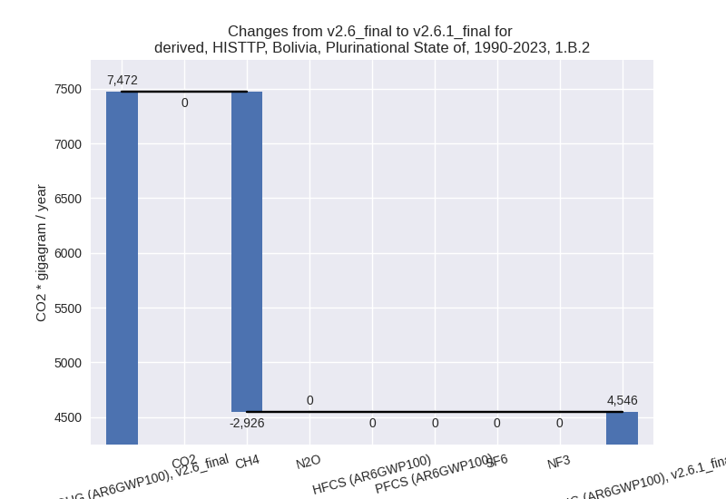
There is no subsector information available in PRIMAP-hist.
- 2: Total sectoral emissions in 2022 are 1653.43 Gg
CO2 / year which is 2.7% of M.0.EL emissions. 2023 Emissions have
changed by 1.1% (17.86 Gg CO2 /
year). 1990-2023 Emissions have changed by 2.6% (23.98 Gg CO2 / year). For 1990-2023
the changes per gas
are:
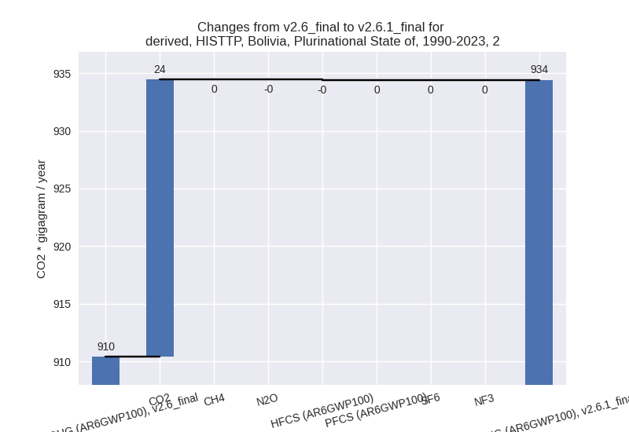 - M.AG: Total sectoral emissions in 2022 are 32672.27 Gg CO2 / year which is 53.9% of M.0.EL emissions. 2023 Emissions have changed by 0.1% (21.93 Gg CO2 / year). 1990-2023 Emissions have changed by 0.1% (19.40 Gg CO2 / year).
- 4: Total sectoral emissions in 2022 are 911.95 Gg
CO2 / year which is 1.5% of M.0.EL emissions. 2023 Emissions have
changed by -60.0% (-1395.15 Gg CO2 /
year). 1990-2023 Emissions have changed by -61.1% (-1060.77 Gg CO2 / year). For 2023
the changes per gas
are:

For 1990-2023 the changes per gas are: - 5: Total sectoral emissions in 2022 are 720.96 Gg
CO2 / year which is 1.2% of M.0.EL emissions. 2023 Emissions have
changed by -4.4% (-40.71 Gg CO2 /
year). 1990-2023 Emissions have changed by -1.6% (-9.33 Gg CO2 / year). For 2023 the
changes per gas
are: